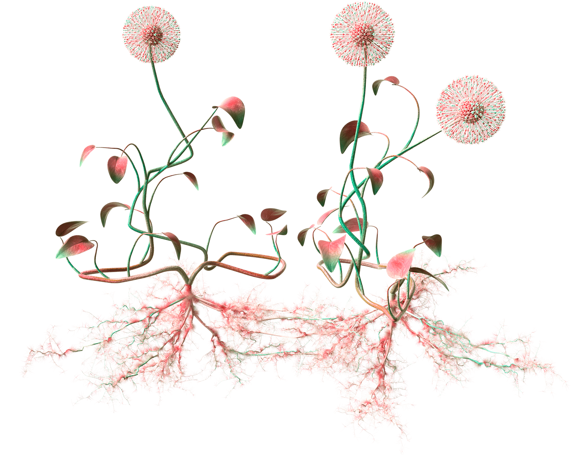

{% extends "./templates/layout/_base.html" %}

{% from "templates/components/_header.html" import header %}
{% from "./templates/components/_icon.html" import icon %}

{% block page_title %}
	Socialis Adventurous
{% endblock %}

{% block page_header %}
	{{ header(showSound=true, showInfo=true, class="header--fixed") }}
{% endblock %}

{% set pageClass='page-species page-species--intro page-species--socialis-adventurous' %}
{{ header(showSound=true, showInfo=true) }}
{% block page_content %}
  <div class="page-species__wrapper">
    <div class="page-species__bg-container">
      
    </div>
    <div class="container page-species__container">
      <p class="page-species__intro-text">Your<br>Creative Species</p>
      <div class="page-species__header-wrapper">
        <div class="page-species__header">
          
        </div>
      </div>
    </div>
  </div>
  
  <a href="socialis-adventurous-reveal.html" class="page-species__next-page" style="opacity: 0">
    {{icon(name="scroll", class="icon--next-page")}}
  </a>
{% endblock %}
